FAQ
Color palettes to convey information to color-impaired viewers and on different output devices
Color palettes to convey information to color-impaired viewers and on different output devices
Question:
Which of Ferret's color palettes best convey information to color-impaired viewers?
What palettes will show up well if I photocopy the output, or display it using LCD projectors, Laptop and CRT screens, and color printers?
Explanation:
The article "The End of the Rainbow? Color Schemes for Improved Data Graphics", by A. Light and P. J. Bartlein, (2004) EOS 85(40), p. 385, 391 discusses shortcomings of some of the common color schemes used in scientific publication. It explores types of color palettes which better distinguish the desired features of the data. This article is available on-line at http://geography.uoregon.edu/datagraphics/EOS/index.htm
A presentation "A Better Default Color map for Matplotlib, https://youtu.be/xAoljeRJ3lU" discusses making choices of good default color map.
Articles and notes on this topic from EOS are available at http://geography.uoregon.edu/datagraphics/EOS/Light&Bartlein.pdf Look at the last few pages for a response to the original article "Forum: Comment on Color Schemes for Improved Data Graphics" and the reply to this comment. These make a helpful discussion of the issues involved and useful color palettes for different sorts of data.
The article references two web sites where one can view these palettes and access their definitions. The sites are the ColorBrewer tool at https://colorbrewer2.org, and from the University of Oregon Data Graphics Research group, Department of Geography, http://geography.uoregon.edu/datagraphics/color_scales.htm.
Solution:
We have implemented as Ferret palette files some of the color schemes discussed in the EOS article and the two web sites it references. Their palette names, some of their properties,and a simple example of each are in the tables below.
Recall that in Ferret you can change to a new palette using the /PALETTE=qualifier on a SHADE or FILL command:
yes? SHADE/I=1:10/J=1:10/PAL=green_magenta i-j yes? FILL/I=1:100/J=1:100/PAL=blue_darkred cos(i/8) + sin(j/6)
or, you can change to a particular palette for all subsequent plots with the PALETTE command:
yes? PALETTE blue_green_yellow yes? USE etopo20 yes? SHADE rose yes? FILL/x=12w:35e/y=25:60 rose ! this plot also done with blue_green_yellow yes? USE levitus_climatology yes? PALETTE red_purple ! change to red_purple palette for next plots... yes? FILL/K=1 salt
The ColorBrewer tool allows us to view different palettes as color bars and in a sample map. It lists properties and advantages of each one. The types we've implemented for Ferret are sequential and diverging. Here we list whether the color schemes are distinguishable by color-impaired viewers and whether they will withstand black-and-white photocopying. The ColorBrewer site also evaluates how well the color schemes show up on various output devices, such as LCD projectors, Laptop and CRT screens, and color printers.Most of the palettes here are listed in pairs, e.g. blue_green_yellow and yellow_green_blue.These pairs contain the same colors, in reverse order. The purple_red and red_purple palettes contain different sets of colors; purple_red having dark red to light purple and red_purple having dark purple to light red.
| Name | Type | Color- impaired friendly |
Photo- copy |
Example | script |
| blue_green_yellow yellow_green_blue |
sequential | Yes | Yes | 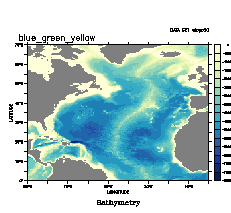 |
! pal_blue_green_yellow.jnl ! Demonstrate use of the blue_green_yellow palette cancel mode logo set window/size=0.5 use etopo20 set region/x=90w:360/y=0:70 shade/palette=blue_green_yellow/lev=20/title="Bathymetry" if rose lt 0 then rose shade/over/nolab/pal=grey if rose ge 0 then rose label/nouser `($ppl$xorg)+0.1`,`($ppl$ylen)+0.2`,0, 0, 0.25 "@ASblue_green_yellow" frame/file=blue_green_yellow.gif |
| green_brown green_brown |
diverging | Yes | No | 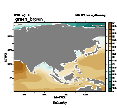 |
! pal_green_brown.jnl ! Demonstrate use of the green_brown palette cancel mode logo set window/size=0.5 use levitus_climatology set reg/x=60:150/y=-20:80 fill/palette=green_brown/lev=20/title="Salinity" salt[k=1] go fland 20 label/nouser `($ppl$xorg)+0.1`,`($ppl$ylen)+0.2`,0, 0, 0.25 "@ASgreen_brown" frame/file=green_brown.gif |
| purple_orange orange_purple |
diverging | Yes | No | 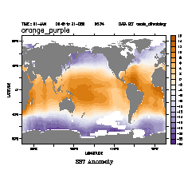 |
! pal_orange_purple.jnl ! Demonstrate use of the orange_purple palette cancel mode logo set window/size=0.5 use coads_climatology can region let sst_ave = sst[t=@ave,y=@ave] fill/palette=orange_purple/lev=20/title="SST Anomoly" sst[L=1]-sst_ave go fland label/nouser `($ppl$xorg)+0.1`,`($ppl$ylen)+0.2`,0, 0, 0.25 "@ASorange_purple" frame/file=orange_purple.gif |
| yellow_orange_brown yellow_orange_brown |
sequential | Yes | ? | 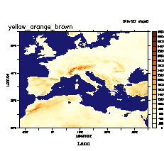 |
! pal_yellow_orange_brown.jnl ! Demonstrate use of the yellow_orange_brown palette cancel mode logo set window/size=0.5 use etopo5 set region/x=12w:35e/y=25:60 let land = if rose ge 0 then rose shade/palette=yellow_orange_brown/lev=20/title="Land" land shade/nolab/over/palette=blue_dark if rose lt 0 then rose label/nouser `($ppl$xorg)+0.1`,`($ppl$ylen)+0.2`,0, 0, 0.25 "@ASyellow_orange_brown" frame/file=yellow_orange_brown.gif |
| orange_red red_orange |
sequential | Yes | Yes | 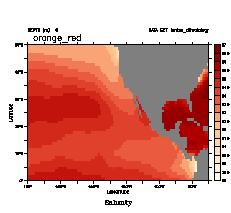 |
! pal_orange_red.jnl ! Demonstrate use of the orange_red palette cancel mode logo set window/size=0.5 use levitus_climatology set region/x=180:70w/y=0:50 shade/palette=orange_red/lev=20/title="Salinity" salt[k=1] shade/over/nolab/palette=grey/lev=(1000,1000,1) missing(salt[k=1],1000) label/nouser `($ppl$xorg)+0.1`,`($ppl$ylen)+0.2`,0, 0, 0.25 "@ASorange_red" frame/file=orange_red.gif |
| purple_red | sequential | Yes | ? |  |
! pal_purple_red.jnl ! Demonstrate use of the purple_red palette cancel mode logo set window/size=0.5 use coads_climatology fill/palette=purple_red/title="SST"/y=0:90 sst[L=1] go fland label/nouser `($ppl$xorg)+0.1`,`($ppl$ylen)+0.2`,0, 0, 0.25 "@ASpurple_red" frame/file=purple_red.gif |
| red_purple | sequential | Yes | ? | 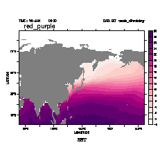 |
! pal_red_purple.jnl ! Demonstrate use of the red_purple palette cancel mode logo set window/size=0.5 use coads_climatology fill/palette=red_purple/title="SST"/y=0:90 sst[L=1] go fland label/nouser `($ppl$xorg)+0.1`,`($ppl$ylen)+0.2`,0, 0, 0.25 "@ASred_purple" frame/file=red_purple.gif |
{kind=link}
{kind=link}
{kind=link}
{kind=link}
{kind=link}
{kind=link}
At the University of Oregon site, http://geography.uoregon.edu/datagraphics/color_scales.htm, a number of palettes are defined and discussed. Here is a listof several that we have implemented for Ferret, with comments from the University of Oregon Data Graphics Research group. For all of these palettes except the last, categorical_12_step, there are pairs of palettes which contain the same colors in reverse order.
| blue_darkred darkred_blue |
Useful for temperature-like data, with a subjective interpretation (blue=cold, red=hot) | 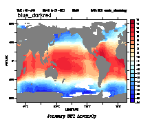 /> |
! pal_blue_darkred.jnl ! Demonstrate use of the blue_darkred palette cancel mode logo set window/size=0.5 use coads_climatology let sst_ave = sst[t=@ave,y=@ave] fill/palette=blue_darkred/title="January SST Anomoly"/lev=20 sst[L=1]-sst_ave go fland label/nouser `($ppl$xorg)+0.1`,`($ppl$ylen)+0.2`,0, 0, 0.25 "@ASblue_darkred" frame/file=blue_darkred.gif |
| blue_brown brown_blue |
Useful for data with a dry (brown) vs. wet (blue) association | 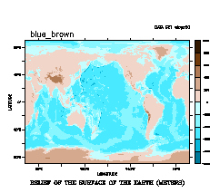 |
! pal_blue_brown.jnl ! Demonstrate use of the blue_brown palette cancel mode logo set window/size=0.5 use etopo20 fill/palette=blue_brown/lev=(-10000,10000,2000) rose label/nouser `($ppl$xorg)+0.1`,`($ppl$ylen)+0.2`,0, 0, 0.25 "@ASblue_brown" frame/file=blue_brown.gif |
| blue_darkorange darkorange_blue |
Useful for data without a specific subjective color association | 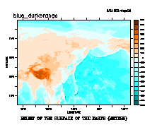 |
! pal_blue_darkorange.jnl ! Demonstrate use of the blue_darkorange palette cancel mode logo set window/size=0.5 use etopo20 set region/x=50:230/y=0:90 fill/palette=blue_darkorange/lev=(-10000,8000,1000) rose label/nouser `($ppl$xorg)+0.1`,`($ppl$ylen)+0.2`,0, 0, 0.25 "@ASblue_darkorange" frame/file=blue_darkorange.gif |
| blue_green green_blue |
Useful for data with a winter (blue) vs. summer (green) association |  |
! pal_blue_green.jnl ! Demonstrate use of the blue_green palette cancel mode logo set window/size=0.5 use coads_climatology fill/x=110:200/y=35/palette=blue_green/TITLE="SST Climatology at 35N" sst label/nouser `($ppl$xorg)+0.1`,`($ppl$ylen)+0.2`,0, 0, 0.25 "@ASblue_green" frame/file=blue_green.gif |
| blue_orange orange_blue |
Bright blue to bright orange colors. Useful for data such as sea-level pressure, with a subjective association (blue=low, wet, orange=high, dry) | |
! pal_blue_orange.jnl ! Demonstrate use of the blue_orange palette cancel mode logo set window/size=0.5 use coads_climatology fill/palette=blue_orange/lev=(970,1034,4) slp[y=-75:75,l=1] label/nouser `($ppl$xorg)+0.1`,`($ppl$ylen)+0.2`,0, 0, 0.25 "@ASblue_orange" go fland frame/file=blue_orange.gif |
| green_magenta magenta_green |
Useful for generic diverging data. Colors can be differentiated by color-deficient viewers | 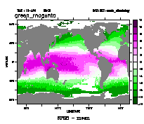 |
! pal_green_magenta.jnl ! Demonstrate use of the green_magenta palette cancel mode logo set window/size=0.5 use coads_climatology let humidity = speh - speh[x=@ave,y=@ave,L=@ave] shade/l=1/palette=green_magenta/lev=(-12,12,2)/title="SPEH - mean" humidity label/nouser `($ppl$xorg)+0.1`,`($ppl$ylen)+0.2`,0, 0, 0.25 "@ASgreen_magenta" go fland frame/file=green_magenta.gif |
| categorical_12_step | A categorical color scale with colors that may be distinguishable to all viewers | 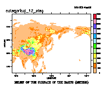 |
! pal_categorical_12_step.jnl ! Demonstrate use of the categorical_12_step palette cancel mode logo set window/size=0.5 use etopo20 set region/x=50:230/y=0:90 fill/palette=categorical_12_step/levels=(0,6000,500) rose label/nouser `($ppl$xorg)+0.1`,`($ppl$ylen)+0.2`,0, 0, 0.25 "@AScategorical_12_step" frame/file=categorical_12_step.gif |
{kind=link}
{kind=link}
{kind=link}
{kind=link}
{kind=link}